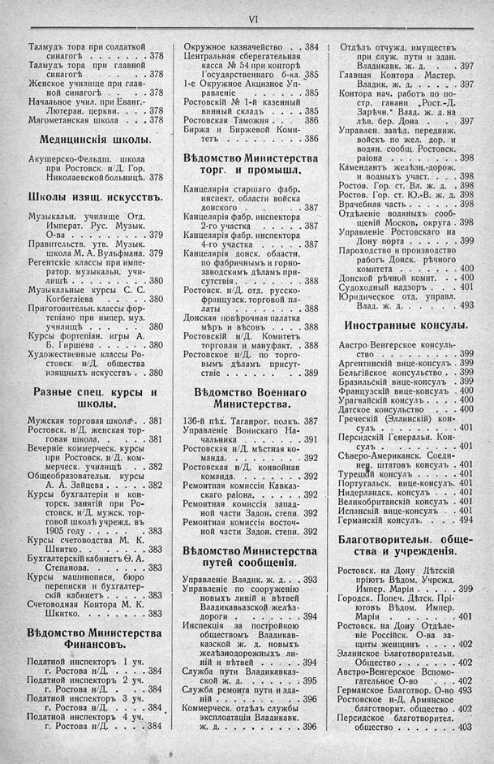

Лист источника 36
Скан

Распознанный текст
VI
Талмудъ тора при солдаткой
синагогѣ . . . . . . 378
Талмудъ тора при главной
синагогѣ . . . . . . 378
Женское училище при глав-
ной синагогѣ . . . . 378
Начальное учил. при Еванг.-
Лютеран. церкви. . . . 378
Магометанская школа . . . 378
Медицинскія школы.
Акушерско-Фельдш. школа
при Ростовск. н/Д. Гор.
Николаевской больницѣ. 378
Школы изящ. искусствъ.
Музыкальн. училище Отд.
Императ. Рус. Музык.
О-ва . . . . . . . . 379
Правительств. утв. Музык.
школа М. А. Вульфмана. 379
Регентскіе классы при импе-
ратор. музыкальн. учи-
лищѣ . . . . . . . . 380
Музыкальные курсы С. С.
Когбетліева . . . . . 380
Приготовительн. классы фор-
тепіано при импер. муз.
училищѣ . . . . . . 380
Курсы фортепіан. игры А.
Б. Гиршева . . . . . 380
Художественные классы Ро-
стовск. н/Д. общества
изящныхъ искусствъ . . 380
Разные спец. курсы и
школы.
Мужская торговая школа . . 381
Ростовск. н/Д. женская тор-
говая школа. . . . . . 381
Вечерніе коммерческ. курсы
при Ростовск. н/Д. ком-
мерческ. училищѣ . . . 382
Общеобразовательн. курсы
А. А. Зайцева . . . . . 382
Курсы бухгалтеріи и кон-
торск. занятій при Ро-
стовск. н/Д. мужск. тор-
говой школѣ учрежд. въ
1905 году . . . . . . 383
Курсы счетоводства М. К.
Шкитко. . . . . . . 383
Бухгалтерскій кабинетъ Ѳ. А.
Степанова. . . . . . . 383
Курсы машинописи, бюро
переписки и бухгалтер-
скій кабинетъ . . . . . 383
Счетоводная Контора М. К.
Шкитко. . . . . . . 383
Вѣдомство Министерства
Финансовъ.
Податной инспекторъ 1 уч.
г. Ростова н/Д. . . . . 384
Податной инспекторъ 2 уч.
г. Ростова н/Д. . . . . 384
Податной инспекторъ 3 уч.
г. Ростова н/Д. . . . . 384
Податной инспекторъ 4 уч.
г. Ростова н/Д. . . . . 384
Окружное казначейство . . 384
Центральная сберегательная
касса № 54 при конторѣ
Государственнаго б-ка. 385
1-е Окружное Акцизное Уп-
равленіе . . . . . . 385
Ростовскій № 1-й казенный
винный складъ . . . . 385
Ростовская Таможня . . . 386
Биржа и Биржевой Коми-
тетъ . . . . . . . . 386
Вѣдомство Министерства
торг. и промышл.
Канцелярія старшаго фабр.
инспект. области войска
донского . . . . . . 387
Канцелярія фабр. инспектора
2-го участка . . . . 387
Канцелярія фабр. инспектора
4-го участка . . . . 387
Канцелярія донск. областн.
по фабричнымъ и горно-
заводскимъ дѣламъ при-
сутствія. . . . . . . 388
Ростовск. н/Д. отд. русско-
французск. торговой пл-
латы . . . . . . . . 388
Донская повѣрочная палатка
мѣръ и вѣсовъ . . . . 388
Ростовскій н/Д. Комитетъ
торговли и мануфакт. . 388
Ростовское н/Д. по торго-
вымъ дѣламъ присут-
ствіе . . . . . . . . 389
Вѣдомство Военнаго
Министерства.
136-й пѣх. Таганрог. полкъ. 387
Управленіе Воинскаго На-
чальника . . . . . . 391
Ростовская н/Д. мѣстная ко-
манда. . . . . . . . 392
Ростовская н/Д. конвойная
команда. . . . . . . 392
Ремонтная комиссія Кавказ-
скаго раіона. . . . . 392
Ремонтная комиссія запад-
ной части Задон. степи. 392
Ремонтная комиссія восточ-
ной части Задон. степи. 392
Вѣдомство Министерства
путей сообщенія.
Управленіе Владик. ж. д. . . 393
Управленіе по сооруженію
новыхъ линій и вѣтвей
Владикавказской желѣз.
дороги . . . . . . . 394
Инспекція за постройкою
обществомъ Владикав-
казской ж. д. новыхъ
желѣзнодорожныхъ ли-
ній и вѣтвей . . . . 394
Служба пути Владикавказ-
ской ж. д. . . . . . 395
Служба ремонта пути и зда-
ній . . . . . . . . . 396
Коммерческ. отдѣлъ службы
эксплоатаціи Владикавк.
ж. д. . . . . . . . . 396
Отдѣлъ отчужд. имуществъ
при служ. пути и здан.
Владикавк. ж. д. . . . 397
Главная Контора Мастер.
Владик. ж. д. . . . . 397
Контора нач. работъ по по-
стр. гавани „Рост.-Д.
Зарѣчн.“ Влад. ж. д. на
лѣв. бер. Дона . . . . 397
Управлен. завѣд. передвиж.
войскъ по жел. дор. и
водян. сообщ. Ростовск.
раіона . . . . . . . 398
Камендантъ желѣзн.-дорож.
и водныхъ участ. . . . 398
Ростов. Гор. ст. Вл. ж. д. 398
Ростов. Гор. ст. Ю.-В. ж. д. 398
Врачебная часть . . . . . 398
Отдѣленіе водяныхъ сооб-
щеній Москов. округа . 398
Управленіе Ростовскаго на
Дону порта . . . . . 399
Пароходство и производство
работъ Донск. рѣчного
комитета . . . . . . 400
Донской рѣчной комит. . . 400
Судоходный надзоръ . . . 401
Юридическое отд. управл.
Влад. ж. д. . . . . . 493
Иностранные консулы.
Австро-Венгерское консуль-
ство . . . . . . . . 399
Аргентинскій вице-консулъ . 399
Бельгійское консульство . . 399
Бразильскій вице-консулъ . 399
Французскій вице-консулъ . 400
Урагвайскій консулъ . . . 400
Датское консульство . . . 400
Греческій (Эллинскій) кон-
сулъ . . . . . . . . 401
Персидскій Генеральн. Кон-
сулъ . . . . . . . . 401
Сѣверо-Американск. Соеди-
нен. штатовъ консулъ . 401
Турецкій консулъ . . . . 401
Португальск. вице-консулъ. 401
Нидерландск. консулъ . . . 401
Великобританскій консулъ . 401
Испанскій вице-консулъ . . 401
Германскій консулъ. . . . 494
Благотворительн. обще-
ства и учрежденія.
Ростовск. на Дону Дѣтскій
пріютъ Вѣдом. Учрежд.
Импер. Маріи . . . . 399
Городск. Попеч. Дѣтск. Прі-
ютовъ Вѣдом. Импер.
Маріи . . . . . . . 401
Ростовск. на Дону Отдѣле-
ніе Россійск. О-ва за-
щиты женщинъ . . . . 402
Эллинское Благотворительн.
Общество . . . . . . 402
Австро-Венгерское Вспомо-
гательное О-во . . . 402
Германское Благотвор. О-во 493
Ростовское н-Д. Армянское
благотворит. общество . 402
Персидское благотворител.
общество . . . . . . 403